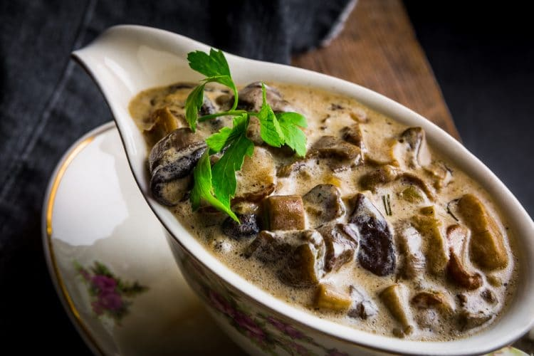

Champignonsaus

Zonder pakjes en zakjes: champignonroomsaus
Ingredienten
- 250 ml slagroom
- 200 ml runderbouillon (van een blokje en wat kokend water, of zelfgemaakt)
- 1 sjalotje
- 1 teen knoflook
- 350 gram champignons (in plakken)
- 1 eetlepel bloem
- Bosje platte peterselie, fijngehakt (ca. 2 eetlepels)
- Roomboter
Stappen:
- Verhit een flink stuk roomboter in een diepe koekenpan en fruit hierin het fijngesneden sjalotje en de fijngesneden (of geperste) knoflook. Voeg de champignonplakjes toe en bak tot deze bruin en zacht zijn. Breng op smaak met zout en peper.
- Voeg de bloem toe, laat even kort garen. Voeg nu de bouillon en slagroom toe en laat inkoken tot de gewenste dikte. Test nogmaals of er nog zout en peper nodig is.
- Voeg voor serveren de fijngehakte peterselie toe.
Terug